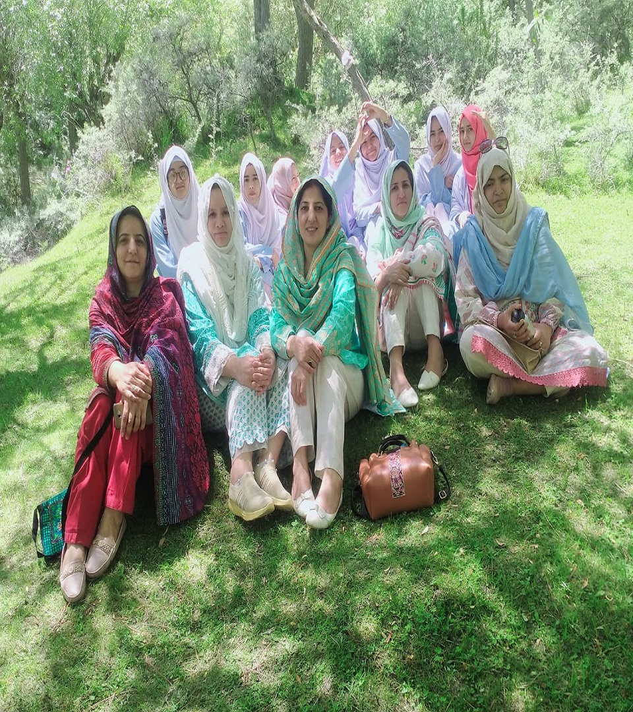
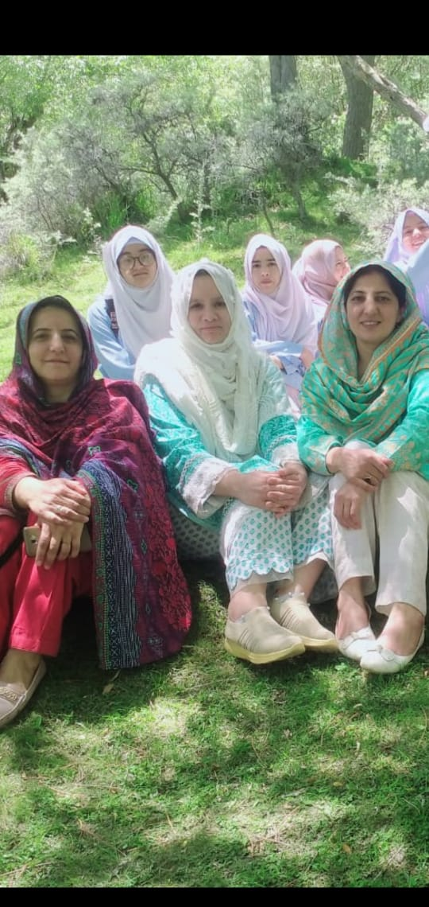
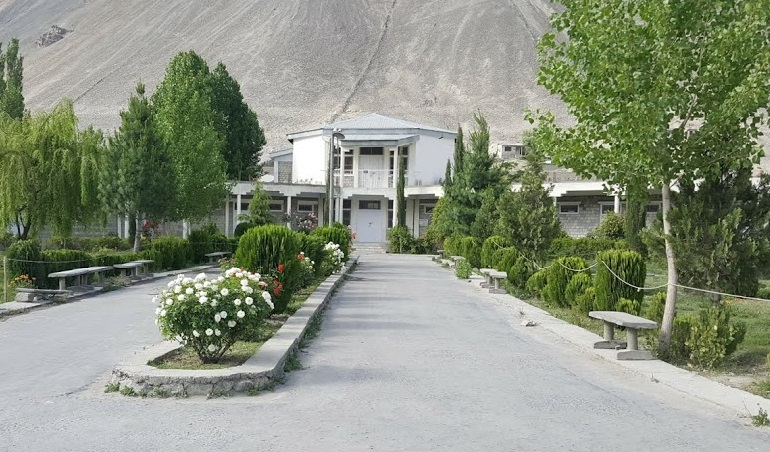
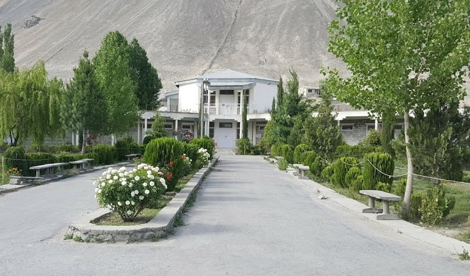
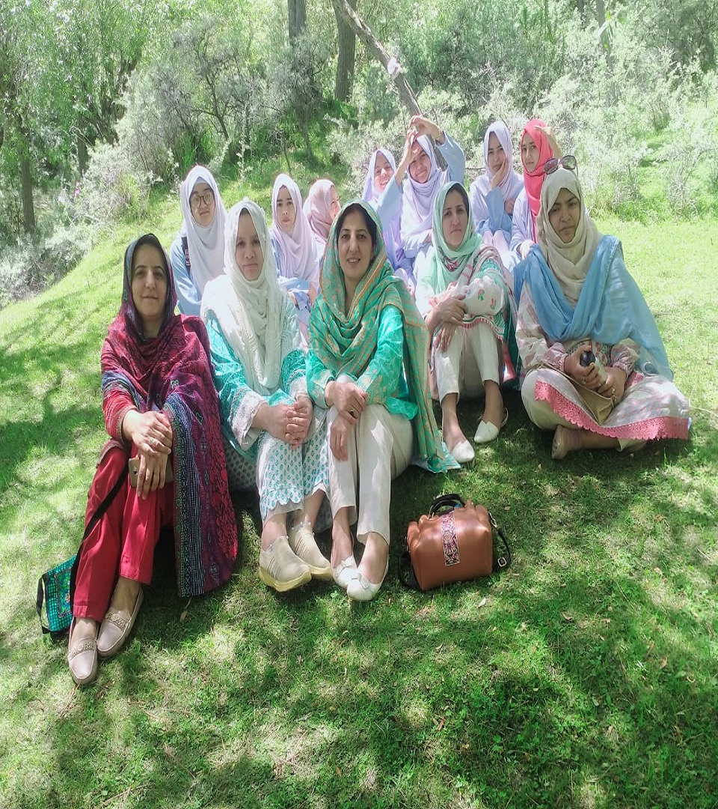
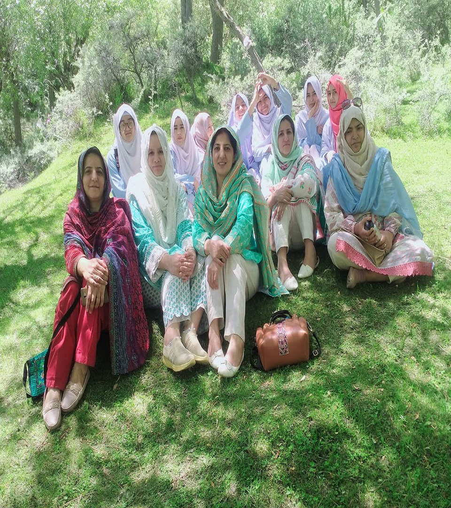
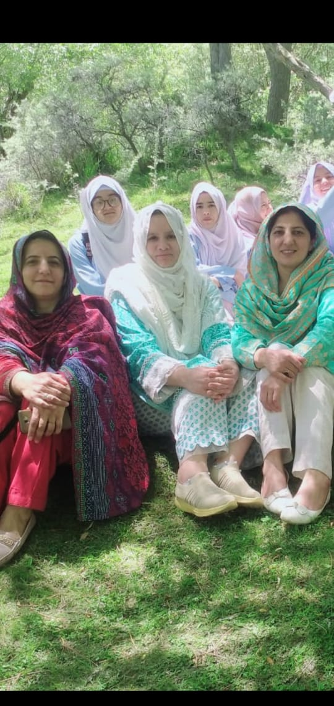
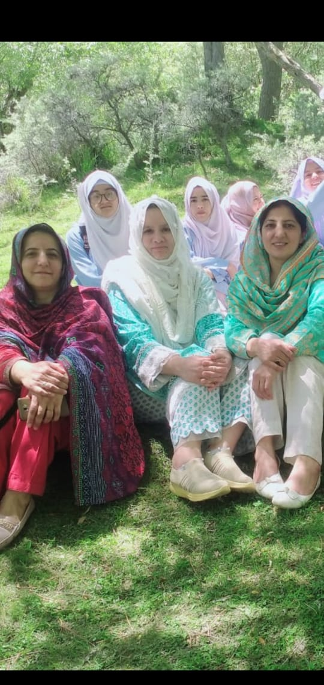

Government college for women Skardu was started in 1989 from meager resources with the help of Boys degree College Skardu. The college was shifted to another government building in 1996.The present building was constructed in 2004, it has an area of 30
canals. The institution provides education in Pre medical, Pre-engineering, General Science, Computer Science and Humanities group at intermediate level, and with the same combination at BA and BSC levels. Now it also provides education in BS for
botany and computer science affiliated with University Of Baltistan. It is only Government college for women in Baltistan regions, which provides education at graduation level.
ACADEMICS
Undergraduate


Botany Computer Science Faculty of Arts Faculty of Science
 

 

 
